AI Academy · Level 4 · Grade 9 · Week 30 · Student lesson
Improve Generalization
Learn to understand, design, build, test and explain AI systems responsibly.
Project: Responsible Plant Classifier
Before you start
Week 18: a controlled experiment separates possible causes.
Plan time to read, investigate and explain. Keep predictions separate from observations.
Student lesson · 1 of 14
Your mission
Your learning target
I can compare training and validation evidence for model capacity.
I can explain overfitting without assuming every gap proves it.
I can use a declared selection rule instead of perfect training fit.
Remember before reading
Close your notes first. A rough first answer helps us choose the right starting point; it is not a score for your ability.
Without opening the old lesson, explain one key idea from Feature Engineering. Give an example and a mistake that the idea helps you avoid.
Without opening the old lesson, explain one key idea from Overfitting. Give an example and a mistake that the idea helps you avoid.
Without opening the old lesson, explain one key idea from Train, Validation, Test. Give an example and a mistake that the idea helps you avoid.
After trying, check the relevant lesson or ask your teacher. Change the part of your explanation that the evidence shows was wrong.
Different failure causes require different repairs: simplicity, representative data, regularization, or better features.
Builder name and experiment date:
Readiness for the connected explanation
Can a zero training error guarantee good validation performance?
Readiness for Distribution shift
Why does a test score need a population description?
This week’s end goal
By the end, I can explain improve generalization using a traced example and a stated limitation.
Student lesson · 2 of 14
Notice the evidence
PICTURE ENTRY
Notice → Predict → Explain
Begin with visible evidence; do not explain more than the picture and information support.
Name three visible details without interpreting them.
Predict the data, model, or evaluation decision being made.
Identify one hidden assumption that could change the result.
State what evidence would confirm or reject your prediction.
My prediction and supporting evidence:
A closer explanation
A more flexible model can represent complicated relationships and accidental details. Capacity can help when there is enough relevant evidence, but perfect training performance is not the goal. Compare training and validation using the same metric while checking leakage and representativeness.
Use fictional classroom data throughout this investigation. Keep the task, units, reference labels and data split visible as you reason. Earlier weeks supplied the model-building process; this week examines overfitting and model capacity.
Apply the connected idea: Distribution shift
A model trained on one set of conditions may encounter another. Lighting, measuring tools, class frequency and the relationship between inputs and labels can change. A shift does not automatically imply failure, but it challenges the assumption that old evidence represents current use.
Use fictional classroom data throughout this investigation. Keep the task, units, reference labels and data split visible as you reason. Earlier weeks supplied the model-building process; this week examines distribution shift.
Student lesson · 3 of 14
See how it works
ML MECHANISM
Input → Model → Evidence
Trace the information, fitted behavior, and evaluation proof separately.
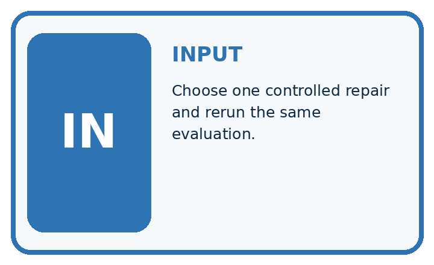
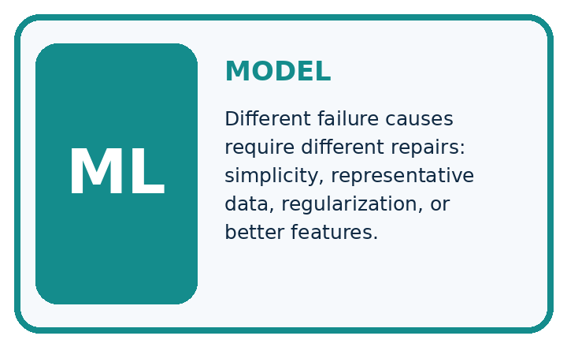
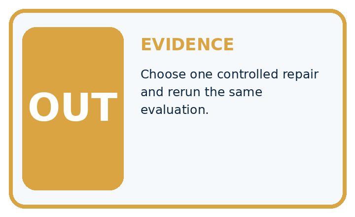
QUESTION Choose one controlled repair and rerun the same evaluation.
MODEL IDEA Different failure causes require different repairs: simplicity, representative data, regularization, or better features.
PROOF NEEDED Use an unseen case, visible calculation, error analysis, and a stated limitation.
Draw a fresh data → model → prediction → evaluation trace:
A closer explanation
On the same regression split, a constant has training MAE 5 and validation 6, a line has training 2 and validation 3, and a highly flexible curve has training 0 and validation 8. Under smallest validation MAE, choose the line. The curve has the lowest training loss but the worst validation result.
Before continuing, underline the decision rule and circle the evidence that supports the conclusion. Explain the example to a partner without replacing the counts or conditions with a stronger claim. Keep the distinction between an observed result and a proposed next step.
Apply the connected idea: Distribution shift
On development-like bright images, a frozen classroom classifier makes 2 errors in 20 cases:10 percent. On a separate dim set it makes 6 errors in 20:30 percent. The pooled result is 8/40=20 percent error. The pooled score hides a 20-percentage-point difference between conditions.
Before continuing, underline the decision rule and circle the evidence that supports the conclusion. Explain the example to a partner without replacing the counts or conditions with a stronger claim. Keep the distinction between an observed result and a proposed next step.
Connect the picture and the explanation
Point to the input, the deciding step and the result in this week’s visual. Explain the same step in ordinary words. A picture helps when you can say what each part represents.
Student lesson · 4 of 14
Compare the cases
EVALUATION DESIGN
Four Tests, Four Kinds of Evidence
A system is not understood until it survives more than one comfortable example.


NORMAL Expected data and expected behavior.
BOUNDARY Value close to a threshold, ambiguous label, or uncertain prediction.
MISSING Necessary field, label, source, or measurement is unavailable.
SHIFTED New lighting, species, device, subgroup, or time condition.
Which case most threatens today's claim, and why?
Change one thing in the pictured case
Change: The unchanged model predicts spotted for both red-background classes and healthy for both grey-background classes.
Prediction: It fails on spotted/grey and healthy/red in the crossed audit.
Reason: Those supplied predictions follow background rather than the intended leaf target.
Student lesson · 5 of 14
Words that unlock the idea
VOCABULARY
Words You Can Calculate and Defend
A definition matters when it lets you interpret a new dataset, model, or result.
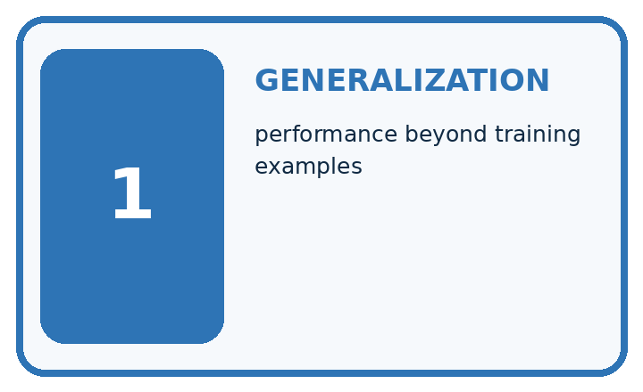
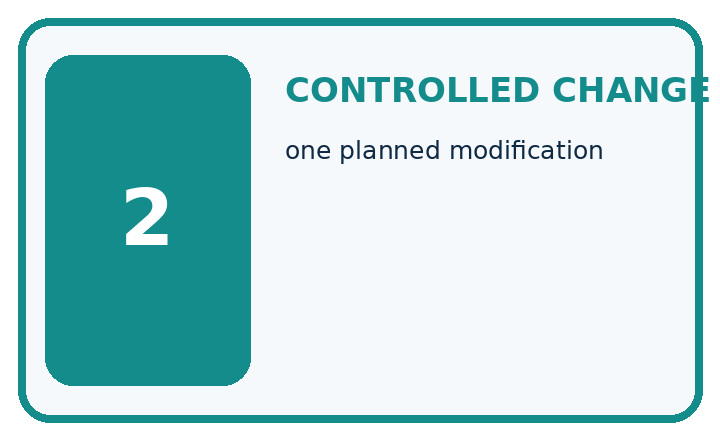
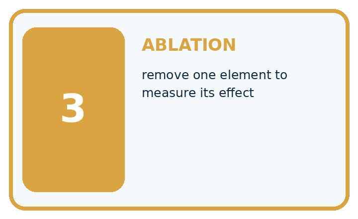
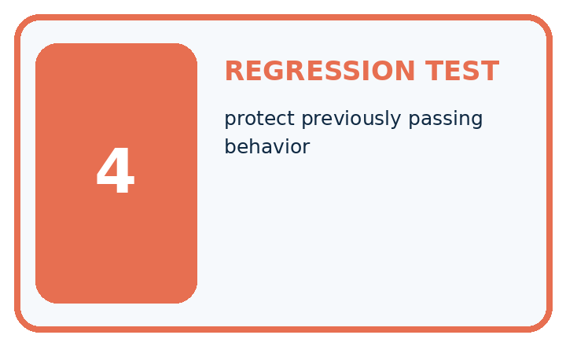
| Term | Precise meaning | My ML example |
|---|---|---|
| generalization | performance beyond training examples | |
| controlled change | one planned modification | |
| ablation | remove one element to measure its effect | |
| regression test | protect previously passing behavior |
Repair the claim using a definition, calculation, or test record:
Words used in the closer explanation
| Word | Meaning |
|---|---|
| Capacity | Flexibility of a model to represent patterns |
| Overfitting | Learning details that fail to generalize well |
| Underfitting | Failing to capture useful structure |
| Generalization | Performance on relevant unseen examples |
Terms for Distribution shift
| Term | Meaning |
|---|---|
| Distribution shift | A change in the data-generating conditions |
| Monitoring | Repeated checks of inputs, outputs and later outcomes |
| Reference labels | The labels used to evaluate predictions |
| Fallback | A planned alternative when the model is unsuitable |
Student lesson · 6 of 14
Follow a worked example
WORKED EVIDENCE
Reason Step by Step
Predict first. Then check each step. A correct answer without visible evidence cannot be audited.
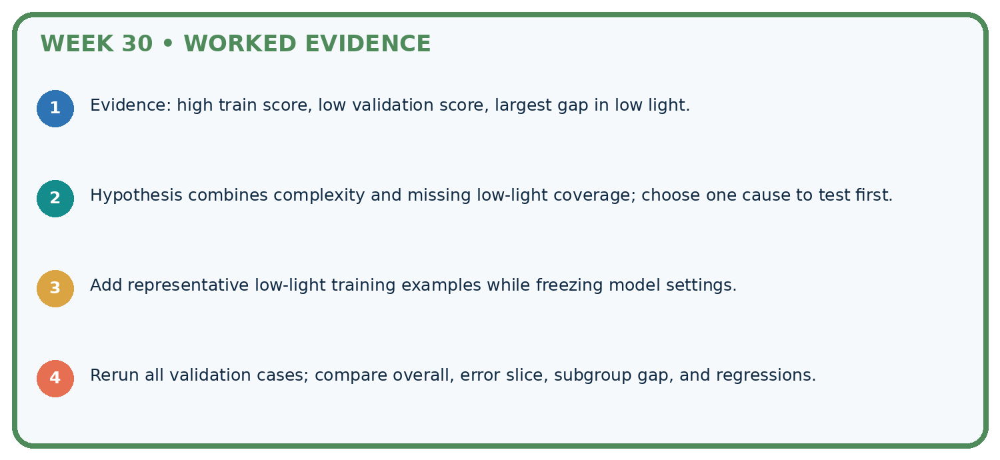
STEP 1 Evidence: high train score, low validation score, largest gap in low light.
STEP 2 Hypothesis combines complexity and missing low-light coverage; choose one cause to test first.
STEP 3 Add representative low-light training examples while freezing model settings.
STEP 4 Rerun all validation cases; compare overall, error slice, subgroup gap, and regressions.
Recalculate, retrace, or restate the evidence independently:
A closer explanation
Overfitting and model capacity at a glance
Apply the connected idea: Distribution shift
Distribution shift at a glance
Learn from the worked case
Cover the result before checking it. Say what is given, choose the procedure, and follow one step at a time. Then uncover the result and explain your first mismatch. Ask why a step is allowed, not only what number it produces.
A pictorial worked case: Improve Generalization
Test whether a plant model follows the leaf or a convenient background shortcut.
The facts we will use
Toy training photos show spotted leaves on red cards and healthy leaves on grey cards. Intended use allows both backgrounds for either class.
All inputs and outcomes in this worked example are invented classroom data; no real model run is claimed.
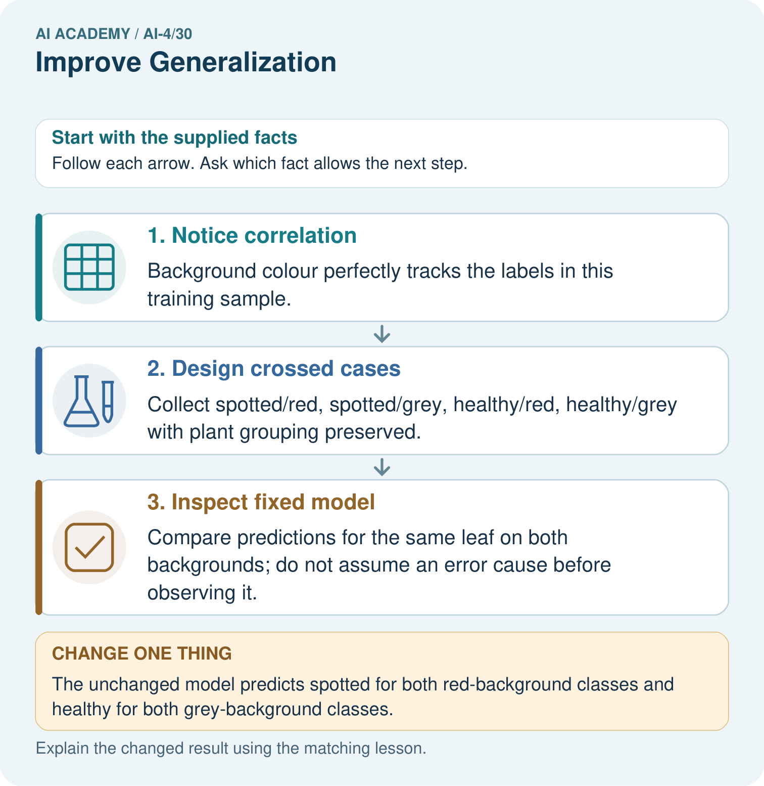
Read the picture one step at a time
Why this result follows
Read the picture in order. Compare predictions for the same leaf on both backgrounds; do not assume an error cause before observing it. The arrows show which recorded input or intermediate result each decision uses. Explain the deciding step aloud before checking the changed case; pointing to the final answer alone does not show how it follows.
What this example does not establish
One controlled audit can reveal a shortcut in this toy setting without proving how every internal feature is represented.
Student lesson · 7 of 14
Find and repair a mistake
ERROR DETECTIVE
Compare → Diagnose → Repair
Do not patch the answer. Find the earliest unsupported assumption, data problem, or experiment error.
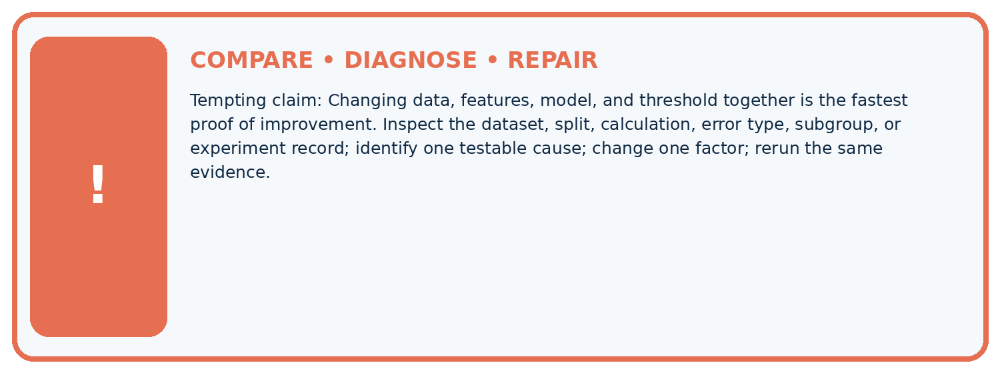
| Evidence record | Expected | Actual | Likely cause / next test |
|---|---|---|---|
| normal case | passes | ||
| boundary case | defined behavior | ||
| missing case | safe fallback | ||
| shifted case | measured limit |
Diagnose one cause and name the cleanest next experiment:
A closer explanation
A simpler model is not always better. If a flexible candidate has better valid evidence under the declared rule, keep that evidence visible. Model capacity is one part of an experiment, alongside features, sample size, label quality and the split.
Apply the connected idea: Distribution shift
Do not normalize away a shift by silently changing preprocessing during evaluation. Treat a revised transformation or retrained model as a new version. Use fresh appropriate evidence for its claims and retain earlier results.
Student lesson · 8 of 14
Practise together
ML STUDIO
Specify Before You Run
A trustworthy result can be reproduced from the recorded data, code, settings, and evaluation rule.

Experiment record
QUESTION + intended use + success threshold
DATA version + grouped split + leakage check
CODE/preprocessing + features + model + settings + seed
METRICS + positive class + units + denominators
PREDICTIONS + errors + subgroup slices + limitations
HUMAN reviewer + release, revise, limit, or stop decision
Write the minimum record needed to reproduce today's result:
A closer explanation
Change one development factor at a time: simplify the candidate, improve data coverage or adjust a declared regularization setting. Refit on training and compare on validation. Do not remove difficult valid examples or repeatedly search the test for a favorable result.
Apply the connected idea: Distribution shift
For a supervised classroom prototype, define a review trigger before use, such as a new unsupported input range or a documented increase in labelled error. Pause the affected use, provide a human or non-model fallback, and investigate with new development evidence. Version any revision.
Practise with less help: Interpret a gap
Use workbook W2 for the connected example “Overfitting and model capacity”. First fill the input and rule boxes. Try the middle steps before asking for a hint. After a hint, try the next step yourself.
| Plan | Do | Check |
|---|---|---|
| What is given? Which rule or procedure applies? | Record each intermediate step. | Does the result follow? What remains unknown? |
Explain your trace to a partner. Your partner points to one step to check. Swap roles on the next case. Each person writes their own explanation.
Check your reasoning
Use the worked case for Overfitting and model capacity. Proposed explanation: “A final answer is enough”. Decide whether this explanation is supported. Point to the step or supplied fact that decides; explain your repair if needed.
Answer on your own before discussion. If you are unsure, say which step you need help with.
Practise the connected topic: Distribution shift
Use its named workbook W2. Identify the given inputs, try the middle steps with less help, then explain your trace. Check this claim before group discussion: A final answer is enough
Explain the picture
What fresh evidence is needed after adding crossed training data? Point to the relevant step in the picture, then write the changed result and the rule or evidence that supports it.
This is supported practice. Keep the separately named independent case for an attempt before feedback.
Student lesson · 9 of 14
Run the investigation
EVIDENCE LAB
Predict → Run → Calculate → Interpret
Keep the test conditions fixed, record every result, and change only one planned factor.
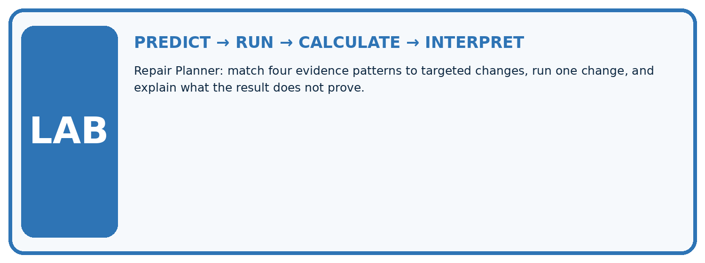
1. Write the hypothesis and expected evidence before running.
2. Repair Planner: match four evidence patterns to targeted changes, run one change, and explain what the result does not prove.
3. Run one normal, one boundary, one missing, and one shifted case.
4. Calculate the metric from raw counts or row-level errors.
5. Interpret what changed, what did not, and what remains unsafe or unknown.
| Case | Prediction | Actual | Calculation / evidence | Meaning / next test |
|---|---|---|---|---|
| Normal | ||||
| Boundary | ||||
| Missing | ||||
| Shifted |
Plan → try → check
Before trying: what do I expect, and why? While trying: which step could first go wrong? Afterwards: what did I actually observe, and what should change? Keep “not run” if you only traced the procedure.
Student lesson · 10 of 14
Build your understanding
MASTERY
From Knowing the Word to Owning the Idea
Move upward only when you can produce evidence without copying the example.

DEFINE Use all four terms precisely: generalization, controlled change, ablation, regression test.
CALCULATE Reproduce the worked evidence with units and denominator.
TRACE Explain the data, code or decision path.
DIAGNOSE Changing data, features, model, and threshold together is the fastest proof of improvement.
TRANSFER Solve a fresh dataset or model case.
IMPROVE Change one cause and rerun fixed evidence.
DEFEND State intended use, metric, limitation, and human responsibility.
Student lesson · 11 of 14
Connect your project
CUMULATIVE PROJECT
Responsible Plant Classifier
Every week adds one reviewable artifact to the same evidence-based capstone.
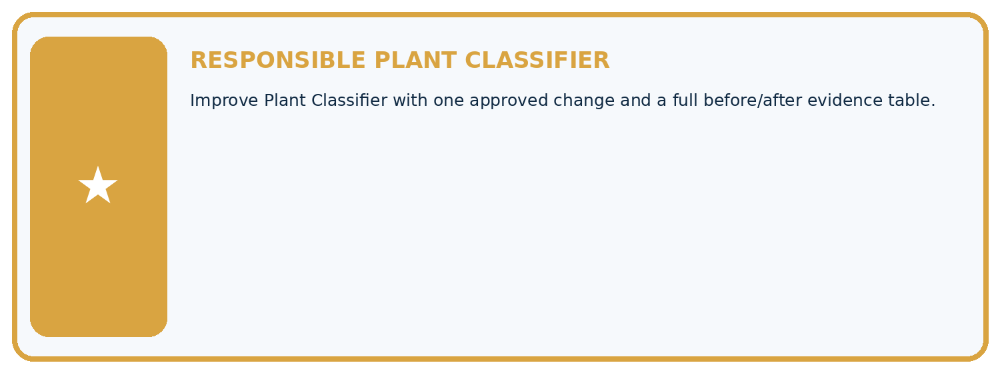
Which requirement or risk does this artifact address?
Which dataset, split, code, and metric version does it use?
What normal and shifted cases were tested?
What remains uncertain or weak?
What decision still belongs to a teacher or qualified human?
My evidence-linked project decision:
Evidence for your project
For your Responsible Plant Classifier, save the input, procedure, observed result and limitation of this check. Label this worked example as practice; use a different, previously unreviewed case when checking independent understanding.
Student lesson · 12 of 14
Show what you know
INDEPENDENT PROOF
Explain • Calculate • Transfer • Defend
Complete this with a fresh case after guided practice and compare it with the mastery criteria.
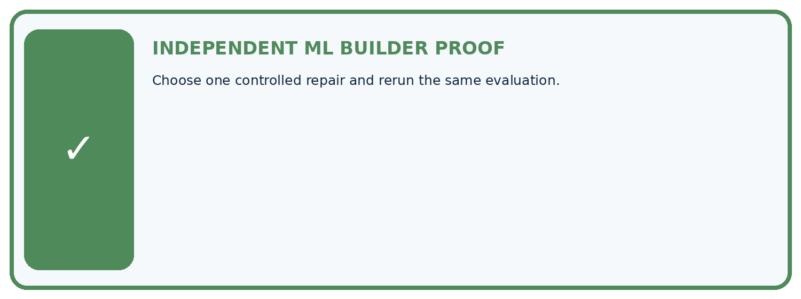
□ Define the task, feature/target roles, and intended-use boundary.
□ Show the calculation, code trace, or experiment record.
□ Test a normal case and one revealing boundary, missing, or shifted case.
□ Diagnose one failure without changing several factors at once.
□ Name a limitation, fairness concern, and the human-review action.
Independent evidence and defense:
My level: □ Not yet □ With one hint □ Independently □ I can teach and defend it
Student lesson · 13 of 14
Study a complete case
Week 30 Worked case
Use the supplied details to practise the weekly concept before attempting the independent question. This case extends the illustrated lesson.
The situation
A classifier relies on tray colour; new trays reduce performance.
The question
Propose controlled improvement.
Worked explanation
Reduce the shortcut and add representative variation; compare on fixed validation cases including new colours. Change one planned factor.
Explain it in your own words
Which detail supports the answer, and why does it matter?
Trace the supplied case visually
Repair a background shortcut deliberately
| Evidence or stage | Value or result |
|---|---|
| Observed shortcut | Tray colour tracks label |
| Changed condition | New trays reduce performance |
| Revision | Reduce shortcut and add relevant variation |
| Comparison | Same validation conditions and slices |
A classifier relies on tray colour; new trays reduce performance.
Propose controlled improvement.
Reduce the shortcut and add representative variation; compare on fixed validation cases including new colours. Change one planned factor.
Student lesson · 14 of 14
Try a new case independently
Independent case: Changed independent case
Spotted leaves have blue backgrounds and healthy leaves white backgrounds in training. Design a generalisation investigation with fresh evaluation.
Attempt this case before feedback. Record any help. Earlier examples below are further practice; a case already practised with feedback cannot establish fresh transfer.
Week 30 Independent application
Close the worked explanation. Apply the idea to this different question without copying.
A team proposes more representative training examples and a simpler model. How should it compare changes while protecting the final test?
My answer, with a trace, calculation or supporting evidence
Create and test
Change one relevant detail. Predict the result before testing. Include a boundary or missing-information case when it helps reveal a limit.
My changed input and expected result
Connect to your project
Improve Plant Classifier with one approved change and a full before/after evidence table.
The evidence I will keep
Your teacher has the independent answer and scoring criteria. Complete the matching workbook week to keep your practice evidence together.
Transfer practice from the original programme
All spotted training leaves use black backgrounds. Propose a collection and comparison that tests the background shortcut without tuning on final test examples.
Use feedback to improve
Attempt the independent case before hints. Record whether you worked alone, used a hint or followed a model. After feedback, fix the first unsupported step and explain why it changed. A later check uses a changed case, not a copied answer.